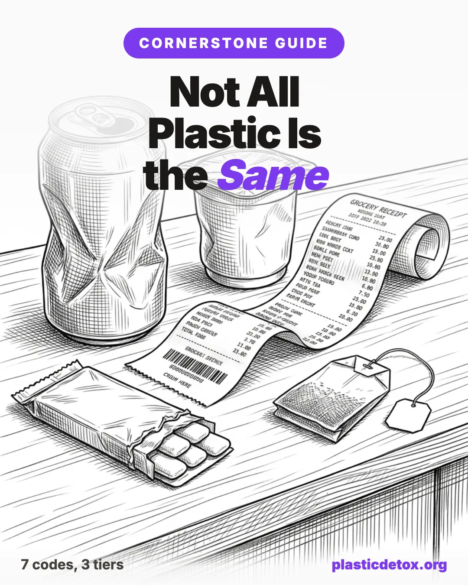

Not All Plastic Is the Same: A Calibrated Guide to What's Actually Worth Worrying About

The 30 Second Summary
- There are 7 types of plastic. Low concern: #2 HDPE, #4 LDPE, #5 polypropylene. Mid concern: #1 PET, #7 Other. High concern: #3 PVC, #6 polystyrene.
- Heat is the single biggest multiplier. Microwaving, dishwashers, and hot cars all accelerate chemical migration. The resin code matters less when you stop heating it.
- BPA free is a marketing claim, not a safety guarantee. The common replacements BPS and BPF have similar hormonal activity, so switch material categories entirely for hot or fatty food contact.
- Material switches beat ingredient hunting. Glass, stainless steel, cast iron (a Lodge skillet lasts generations), and platinum cured silicone cover almost every kitchen need without forcing you to evaluate each new plastic product on the shelf.
- Microplastics are real and emerging. They have been found in human blood, placenta, and arterial plaque, with the first hard clinical endpoints appearing in 2024 research. Reduce exposure where it is easy, do not panic where it is not.
- Perfection is not the goal. Redirect the exposures that matter most. The polystyrene foam coffee cup is a higher priority than the polypropylene yogurt tub.
Plastic touches almost every part of modern life. Some of those contact points carry meaningful chemical exposure. Many do not. The goal here is to give you a calibrated framework, not a fear list. Below we walk through the history, the hiding places, the resin codes, and the specific claims that come up most often, so you can decide for yourself where to spend the attention.
A Short History: How Plastic Became Everything
Plastic did not appear all at once. It took about fifty years to go from a single laboratory curiosity to the most produced material on Earth.
The prehistory is in the 1860s. In 1862 the English inventor Alexander Parkes demonstrated Parkesine at the Great London Exposition, a moldable material made by modifying natural cellulose. A few years later, the firm Phelan and Collender offered a $10,000 prize for an ivory substitute, because billiard ball demand was outpacing elephant supply. John Wesley Hyatt entered the contest and developed celluloid in 1869. The billiard ball anecdote is the one everybody remembers, but Hyatt almost certainly never collected the prize: early celluloid balls were unstable enough that on hard impact they reportedly made a small bang, and celluloid found its real market in photographic film, combs, and dentures rather than billiards.
The deeper point is that Parkesine and celluloid are not fully synthetic. Both modify natural cellulose, which is why the real start of the plastic era is several decades later, in 1907, in a home laboratory in Yonkers, New York. Belgian born chemist Leo Baekeland was investigating reactions between phenol and formaldehyde, originally looking for a synthetic substitute for shellac. By controlling temperature and pressure inside a sealed vessel he called the Bakelizer, he produced a hard, moldable, heat resistant material. He announced the invention at a meeting of the American Chemical Society in February 1909. He called it Bakelite.
Bakelite was the first fully synthetic plastic, and the world ran with it. Radios, telephones, electrical insulators, and automobile ignition parts were soon made of Bakelite because of its electrical insulation and heat resistance. By the time Baekeland died in 1944, world production had reached around 175,000 tons, used in over 15,000 different products.
What followed was a cascade. Polyvinyl chloride (PVC) was commercialized in the 1920s. Polyethylene, the most common plastic in the world today, was discovered by accident at ICI in 1933. Nylon arrived in 1935. Polypropylene, polystyrene, polycarbonate, and PET all reached commercial scale between the 1940s and 1970s. Global plastic production rose from 234 million tons in 2000 to 460 million tons in 2019.
Plastic became ubiquitous because it solved real problems. It made medical equipment sterile and disposable. It kept food fresh longer. It made cars lighter and more fuel efficient. It made products affordable. The question is not whether plastic should exist. The question is which plastics, in which applications, are worth the tradeoffs.
Where Plastic Hides (More Places Than You Think)
When most people picture plastic, they picture a water bottle or a grocery bag. The material is woven into categories you may not associate with it at all.
In your food supply
- Beverage bottles, deli containers, condiment squeeze bottles
- Yogurt cups, sour cream tubs, hummus containers
- Coffee pods (most are plastic with an aluminum lid)
- Tea bags (many commercial brands contain plastic to seal the bag)
- The liner inside aluminum cans (almost always an epoxy resin)
- Receipt paper coatings, which transfer to food through your hands
- Bread bag clips, twist ties, pasta windows, deli paper coatings
In your kitchen
- Cutting boards, spatulas, mixing bowls
- The nonstick coating on most pans (a fluoropolymer)
- Coffee maker reservoirs and tubing
- Refrigerator drawers, water dispenser lines, ice maker components
- Most "silicone" kitchen tools that contain plastic fillers unless labeled platinum cured
In your bathroom and personal care
- Toothbrushes, dental floss containers, floss itself
- Razor handles and cartridges
- Bottles for shampoo, conditioner, body wash, lotion, sunscreen
- Microplastic exfoliants in some scrubs (banned in the US in rinse off cosmetics, but still in some leave on products and older inventory)
- Synthetic loofahs and shower puffs
- The polyester thread in your towels and the elastane in your underwear
In clothing and textiles
- Polyester, nylon, acrylic, spandex, elastane, fleece (all plastic)
- Most performance and athleisure fabrics
- Mattress covers, pillow fills, blanket fibers
- Carpet and upholstery
- Car seat fabric, child car seat covers, stroller fabric
In your home
- Paint (most modern paints are acrylic or vinyl based)
- Caulk, sealant, foam insulation
- Vinyl flooring, vinyl shower curtains
- Window blinds, electrical outlets, light switches
- The dust in your home, which contains microplastic shed from all of the above
In places you'd never expect
- Chewing gum (the "gum base" is synthetic rubber, a type of plastic)
- Most commercial bandages
- Tampons and pads (the absorbent core and outer layer)
- Disposable diapers and wipes
- IV bags, tubing, blood storage bags (almost always PVC with phthalate plasticizers)
The point is not to alarm you at the scope. It is to recognize that going plastic free in the literal sense is functionally impossible in modern life. What is actually possible is identifying the exposures that matter most and reducing those.
The Seven Resin Codes: A Map, Not a Verdict
Almost every plastic product carries a Resin Identification Code that tells you what family of plastic it is. The system was introduced in 1988 by the Society of the Plastics Industry and is now governed by the ASTM D7611 standard. The numbers identify the chemical family, not whether your curbside bin will accept it.
1. Flip the item over. The code is usually on the bottom of bottles, tubs, and containers, on the side of squeeze bottles, or near the seam of bags and wraps.
2. Look for a small triangle of three chasing arrows. Inside the triangle is a number from 1 to 7. The mark is usually stamped or embossed into the plastic, not printed in ink.
3. Match the number to the tier below. If you cannot find a code (some thin films, lids, and small parts skip it), assume the item is mixed plastic and treat it as #7 until you know otherwise.
Here is what each number actually represents, and where each sits on the risk hierarchy.
Found in: single use water and soda bottles, salad dressing bottles, peanut butter jars, polyester clothing.
On chemistry alone, PET looks like one of the cleaner plastics. It does not contain BPA or phthalates in its base resin, and the main chemical concern is antimony (a catalyst residue that leaches in tiny amounts, more so when bottles are warm). That used to be the whole story.
It is no longer the whole story. A 2024 study by Qian et al. in PNAS used a new imaging technique and found roughly 240,000 plastic particles per liter in bottled water on average, with about 90% in the nanoplastic range (smaller than 1 micrometer). Earlier work by Mason et al. in 2018 (Frontiers in Chemistry) tested 11 major bottled water brands and reported an average of ~325 microplastic particles per liter, with the worst performing brand averaging over 10,000. Squeezing the bottle, opening and closing the cap repeatedly, heat, and age all increase shedding. PET bottles are now one of the most quantifiable microplastic exposures in a typical diet.
Avoid: bottled water as a daily habit, refilling for weeks, leaving in hot cars, microwaving.
Better path: a home filter that meets NSF/ANSI 401 plus a stainless steel bottle. See how to filter PFAS and microplastics from water and how to remove microplastics from bottled water.
Found in: milk jugs, detergent bottles, shampoo bottles, some food storage containers, plastic grocery bags.
HDPE is considered one of the more stable plastics. It has a high melting point, does not require phthalate plasticizers, and is widely accepted in curbside recycling. It is among the lower concern plastics for food contact.
Reasonable use: food storage, water storage, general purpose.
Found in: plumbing pipes, vinyl flooring, vinyl shower curtains, the smell of new car interiors and inflatable pool toys, some cling wraps, IV bags and medical tubing, garden hoses.
This is the first plastic in the genuinely concerning category. PVC in its pure form is rigid and brittle. To make it flexible, manufacturers add plasticizers, most commonly phthalates. Phthalates are widely used plasticizers recognized as endocrine disrupting chemicals with documented effects on reproductive health. The phthalates are not chemically bonded to the PVC, which means they migrate out over time, especially into fats, with heat, and during physical wear. PVC is also problematic at the manufacturing and disposal stages, where it releases dioxins, but the consumer concern is primarily phthalate leaching.
Avoid: PVC in any product that touches food, that gets warm, that touches skin for prolonged periods, or that is used by children.
Found in: bread bags, produce bags, six pack rings, squeezable bottles, some food wraps.
Chemically similar to HDPE, LDPE is considered low risk for food contact. It is softer and more flexible because of its molecular structure, not because of added plasticizers.
Reasonable use: food storage, bread bags, freezer bags. The main downside is environmental (it is rarely curbside recyclable) rather than health related.
Found in: yogurt containers, hummus tubs, prescription bottles, reusable food containers, straws, bottle caps, disposable cutlery, some baby bottles.
PP has a high melting point and is generally considered one of the safer plastics for food contact, including warm food. It is the resin most commonly used for "microwave safe" labeled containers, though we'd still recommend against routinely microwaving food in any plastic.
Reasonable use: food storage, including for warmer foods. Among the better options when plastic is unavoidable.
Found in: disposable cups, takeout clamshells, foam packaging peanuts, disposable cutlery, some yogurt containers, foam meat trays.
Polystyrene can leach styrene, classified by the International Agency for Research on Cancer as possibly carcinogenic to humans (Group 2B). Leaching increases with heat and with fatty or acidic foods. The hot coffee cup is the textbook bad case.
Avoid: hot beverages in foam cups, hot food in foam takeout, fatty food in polystyrene containers.
Found in: polycarbonate baby bottles (older), some water cooler jugs, some food storage containers, certain bioplastics, multi layer packaging.
This is a catch all category, which is exactly why it deserves caution. Code 7 covers every plastic that does not fit codes 1 through 6, including polycarbonate, acrylic, nylon, polylactic acid (a bio based plastic derived from corn starch or sugarcane), and multi layer packaging that combines different resins. Polycarbonate is the historic concern because it is made from bisphenol A (BPA). Many products now labeled "BPA free" are still polycarbonate family resins made with BPA substitutes like BPS or BPF, and the research on those is not reassuring (more on this below).
Approach with caution: without knowing the specific resin, #7 is the hardest to evaluate.
Addressing the Key Claims Honestly
This is where most plastic guides either go too soft or too hard. Here's our attempt at a calibrated read of the actual evidence.
Claim 1: "BPA free means safe"
Not necessarily. When BPA was restricted in baby bottles and other products following years of concern about its estrogenic activity, manufacturers replaced it most often with bisphenol S (BPS) or bisphenol F (BPF). These are structurally similar molecules, and the research suggests they behave similarly in the body.
A systematic review found that BPS and BPF appear to have metabolism, potencies, and mechanisms of action in vitro similar to BPA, including hormonal actions, and may pose similar potential health hazards. A 2025 analysis in Science of the Total Environment estimated that exposure to bisphenols including BPA, BPS, and BPF was associated with 127 million cases of obesity, type 2 diabetes, and metabolic syndrome globally in 2024, up from 68 million in 2000. In Europe specifically, where BPA has been restricted, BPS and BPF now account for roughly 76% of bisphenol related metabolic disease.
What this means in practice: a "BPA free" label tells you the product does not contain BPA. It does not tell you what replaced it. If the product is hard, clear plastic (the original use case for BPA based polycarbonate), the replacement is likely a related bisphenol.
The honest read: "BPA free" is a marketing claim, not a safety guarantee. For applications where you'd want to avoid BPA (baby bottles, water bottles, food storage that gets heated), the better move is often to switch material categories entirely, to glass, stainless steel, or platinum cured silicone. See BPA Free Is Not Safe for the deep dive.
Claim 2: "Phthalates are just one of many additives, and the doses are tiny"
The dose argument is the standard pushback on endocrine disruption research, and it deserves an honest response. Yes, exposure levels from any single product are usually small. The concern is the cumulative effect across many products and a long timeline, particularly during developmental windows.
Phthalate exposure has been linked to impairments in ovarian function, uterine function, pregnancy outcomes, and endocrine signaling in the hypothalamus, pituitary, ovarian axis. Key phthalates associated with potential toxic outcomes include DEHP, DBP, BBP, DiNP, and DiDP, and their presence in everyday consumer products has been associated with hormonal disruption, gonadal dysfunction, and other hormone related problems. A more recent global analysis estimated mortality attributable to phthalate related cardiovascular disease in the hundreds of thousands annually (Hyman et al., EBioMedicine 2025).
The honest read: phthalates are a legitimate concern, especially for pregnant women, infants, and young children. They are also one of the more avoidable exposures, because they are concentrated in specific product categories (PVC, fragrance, some food packaging) rather than spread evenly across everything. See How to Avoid BPA and Phthalates for a category by category swap list.
Claim 3: "Microplastics are everywhere but we don't know they cause harm"
This is currently the most rapidly evolving area of plastic research, and the honest answer is "we are learning, and the early signals are concerning."
What is established: microplastics have been documented in human blood, lungs, placenta, breast milk, testicles, and brain tissue. Recent evidence indicates that microplastics, especially those smaller than 10 micrometers, may penetrate the placental barrier, leading to potential fetal exposure during gestation.
What is emerging: a 2024 study in the New England Journal of Medicine examined patients undergoing surgery to remove arterial plaque. More than two years after the procedure, those who had microplastics in their plaque had a higher risk of heart attack, stroke, and death than those who did not. This is the first major human study to find an association between microplastic exposure and a hard clinical endpoint, and it has prompted a wave of follow up research.
What is still uncertain: the dose response relationship, the specific mechanisms in humans versus animal models, and how much we can reduce exposure given that microplastics are now in dust, air, and water. As the World Health Organization noted in a 2022 report, current technologies do not yet allow researchers to quantify population level exposures or gauge what proportion of those particles stay in our bodies.
The honest read: microplastics are a legitimate emerging concern, but the strongest evidence to date is associative rather than causal. The reasonable response is to reduce exposure where it is easy (do not heat plastic, filter your drinking water, choose natural fibers when possible) without treating every plastic interaction as urgent. See How to Filter PFAS and Microplastics from Water for the highest leverage water swap.
Claim 4: "If the FDA approves it for food contact, it's safe"
FDA food contact approval is meaningful but limited. It evaluates specific substances at specific migration levels for specific uses. It does not comprehensively evaluate endocrine disruption at low doses, mixture effects (the interaction of multiple chemicals), or chronic effects over decades. It also does not regulate the thousands of "non intentionally added substances" that show up in finished plastics through manufacturing impurities, recycling contamination, and chemical breakdown.
The honest read: FDA approval rules out the most obvious problems. It does not address the subtler ones that endocrine disruption research has spent the last twenty years documenting. "FDA approved" and "comprehensively studied" are not the same thing.
Claim 5: "Plant based bioplastics are the safe alternative"
Bioplastics like PLA (polylactic acid, made from corn) are often marketed as the clean option. They have meaningful environmental advantages in some scenarios (renewable feedstock, industrial compostability), but they are not necessarily safer for food contact. PLA still requires additives for processing, and its compostability depends entirely on access to industrial composting facilities. Most PLA in the US ends up in landfills, where it behaves much like conventional plastic.
The honest read: bioplastics are an environmental story more than a personal exposure story. The chemistry of a bioplastic food container is not automatically safer than a polypropylene one.
The Plastics That Actually Deserve Your Attention
If you do nothing else, prioritize reducing exposure to these.
1. PVC (#3) in anything that touches food, skin, or warmth
This includes vinyl shower curtains (the off gassing in a hot bathroom is real), flexible PVC food wraps, garden hoses used for drinking water, vinyl flooring in children's rooms, and inflatable pool toys. The phthalate plasticizers that make PVC flexible are the primary concern.
Replace with: cotton or linen shower curtains, beeswax wraps or glass containers for food, food grade silicone or stainless for water, hardwood or natural linoleum for flooring.
2. Polycarbonate and #7 plastics in food and beverage contact
The original BPA concern was about polycarbonate baby bottles and water bottles. The replacements are not necessarily better. Any hard, clear plastic in this category deserves scrutiny.
Replace with: glass, stainless steel, platinum cured silicone. For baby bottles specifically, glass with a silicone sleeve is the gold standard. See our non toxic baby and toddler guide.
3. Polystyrene (#6) with hot or fatty foods
The combination of styrene migration plus heat or fat is the worst case. The morning coffee in a foam cup, the takeout pad thai in a clamshell, the meat in a foam tray with its juices.
Replace with: bring your own ceramic mug, request paper or fiber takeout containers, buy meat from a counter that wraps in paper.
4. Plastic in contact with heat, period
Across all plastic categories, heat increases migration. Microwaving food in plastic, washing plastic in a hot dishwasher, leaving water bottles in hot cars, pouring hot liquids into plastic. The resin code matters less when you stop heating it.
Replace with: use glass or ceramic for microwaving. If you must reheat in plastic, transfer to a non plastic dish first. See our food storage guide for vetted glass and stainless picks.
5. Nonstick cookware with damaged or worn coatings
PTFE (the fluoropolymer in Teflon) is reasonably stable when the coating is intact and used below its thermal limits. Three things change that picture. First, scratched, peeling, or overheated nonstick sheds the coating itself into food and releases fumes that cause polymer fume fever above roughly 500F. Second, PFOA, the historic concern, was phased out of US manufacturing by 2015, but the replacement processing aids (GenX, PFHxA, and other short chain PFAS) are not benign defaults; GenX has documented liver, kidney, and immune effects in animal studies and is now under EPA health advisory limits in drinking water. Third, PTFE belongs to the broader PFAS family, the "forever chemicals" now contaminating water supplies worldwide, so even intact nonstick is part of an active environmental and regulatory problem, not just a research curiosity.
Replace with: Lodge cast iron, carbon steel, stainless steel, or ceramic coated cookware. See our cookware comparison for the full breakdown.
6. Fragrance, which often signals phthalates
This is not a resin code, but it is one of the more underrated phthalate exposures. "Fragrance" or "parfum" on an ingredient list is a regulatory loophole that can contain dozens of undisclosed ingredients, including diethyl phthalate (DEP), used to make scents linger. Air fresheners, scented candles, scented laundry products, and conventional personal care products are all common sources.
Replace with: fragrance free products, or products that disclose their fragrance components individually. Essential oils have their own considerations but typically do not contain phthalates.
What's Actually Fine
A calibrated guide has to include this section, or the framework is not honest.
- HDPE (#2) milk jugs, detergent bottles, and food containers. Among the most stable plastics in food contact use.
- Polypropylene (#5) yogurt containers, prescription bottles, and food storage. Generally low risk for food contact, including for warmer foods, though we still do not recommend routine microwaving.
- LDPE (#4) bread bags and freezer bags. Low risk for food contact. The environmental story is worse than the health story for this one.
- Platinum cured silicone. Not technically a plastic, though often grouped with them. Platinum cured medical grade silicone is among the most chemically inert options for food contact and is what we'd point to for bottle nipples, food storage, and baking mats.
If your kitchen has stainless steel, glass, ceramic, cast iron, wood, and a few platinum cured silicone items for the things glass cannot do, you've handled the highest leverage exposures. The yogurt tub from the grocery store is not the priority.
How to Think About This Without Losing Your Mind
A few principles we keep returning to here.
Dose, duration, and developmental window matter most. A pregnant woman, an infant, or a young child has more to gain from reducing exposure than a healthy adult does. The cumulative exposure across a lifetime matters more than any single product.
Heat is the multiplier. If you remember one rule, it is this: do not heat plastic that touches your food. Microwave in glass. Do not put plastic in the dishwasher's heated dry cycle if you can avoid it. Do not leave plastic in a hot car if you'll be drinking from it later.
Material switches beat ingredient hunting. Trying to find the "safe" plastic baby bottle is harder than just buying a glass one. Once you change material categories, you stop having to evaluate every new product in that category.
Perfection is not the goal. You cannot avoid all plastic. The goal is to redirect the exposures that matter most. The polystyrene foam coffee cup is a higher priority than the polypropylene yogurt tub. The vinyl shower curtain matters more than the LDPE bread bag.
Watch the marketing claims. "BPA free," "non toxic," "natural," and "eco friendly" are not regulated terms in most product categories. The specific material matters more than the badge.
What's Next
For deeper guides on specific categories, see:
- Plastic in Groceries: What Really Matters and What You Can Stop Worrying About
- Low Tox Myths, Debunked
- The Complete Parent's Guide to Replacing Toxic Baby and Toddler Products
- Best Plastic Free Food Storage Containers
- How to Avoid BPA and Phthalates
- Plastic Free Beach Day Essentials
If you are new here, our practical priority guide is a good starting point. It points you to the categories where exposures are highest, so you can prioritize without trying to overhaul everything at once.
FAQ
Those numbers are Resin Identification Codes, introduced in 1988 and now governed by ASTM D7611. They identify the chemical family of the plastic, not whether your curbside bin will accept it. 1 is PET, 2 is HDPE, 3 is PVC, 4 is LDPE, 5 is polypropylene, 6 is polystyrene, and 7 is a catch all for everything else, including polycarbonate.
HDPE (#2), LDPE (#4), and polypropylene (#5) are widely considered the lower risk plastics for food contact. PET (#1) has clean base chemistry but the microplastic load is significant: a 2024 PNAS study found roughly 240,000 plastic particles per liter in bottled water on average, with about 90% in the nanoplastic range. PVC (#3), polystyrene (#6), and polycarbonate (#7) are the categories where the chemical leaching concerns are strongest, especially with heat, fat, or acidity.
Not necessarily. BPA free usually means the manufacturer used a structurally similar bisphenol such as BPS or BPF. Research suggests these replacements have similar hormonal activity to BPA. The label rules out BPA specifically, not the broader class of chemicals it belongs to.
Pure PVC is rigid and brittle, so manufacturers add plasticizers to make it flexible. Most commonly those are phthalates, which are not chemically bonded to the resin and migrate out over time, especially with heat, fat, or wear. Phthalates are recognized as endocrine disrupting chemicals with documented effects on reproductive and metabolic health.
Yes. Heat is the single biggest multiplier for chemical migration across almost every plastic category. Microwaving food in plastic, washing plastic in a hot dishwasher, leaving water bottles in hot cars, and pouring hot liquids into plastic all increase the rate at which additives and breakdown products move into food. If you change nothing else, stop heating plastic that touches your food.
Microplastics have been documented in human blood, lungs, placenta, breast milk, testicles, and brain tissue. A 2024 New England Journal of Medicine study linked microplastics in arterial plaque to higher rates of heart attack, stroke, and death. The strongest current evidence is associative rather than causal, but the signals are concerning enough to justify reducing exposure where it is easy.
Not automatically. Bioplastics like polylactic acid have environmental advantages in some scenarios, but they still require processing additives, and their compostability depends on industrial facilities most US consumers do not have access to. The chemistry of a PLA food container is not necessarily safer than a polypropylene one.
Stop heating food in plastic. Microwave in glass or ceramic, do not put plastic on the dishwasher heated dry cycle, and do not leave plastic water bottles in hot cars. Heat is the single biggest multiplier of chemical migration, and removing it eliminates the largest share of your exposure overnight.
Related Articles
- How to Start Reducing Plastic Exposure: A Practical Priority Guide (2026)
A step by step framework for reducing microplastic exposure, starting with what matters most. - BPA Free Is Not Safe: What Replaces BPA and Why It Matters (2026)
A close look at why BPA free labels often hide BPS and BPF, two chemicals just as harmful. - Low Tox Myths, Debunked (2026)
Which kitchen, food, personal care, and baby concerns are real and which are overblown. - Plastic in Groceries: What Really Matters and What You Can Stop Worrying About (2026)
Which foods actually absorb chemicals from packaging and which are safe in plastic. - Cast Iron vs. Stainless Steel vs. Ceramic Cookware (2026)
A complete comparison of the safest non toxic cookware options. - Non Toxic Baby and Toddler Products Guide (2026)
The full setup for the safest feeding, bathing, sleeping, and playing essentials. - How to Avoid BPA and Phthalates (2026)
Category by category swaps that take phthalates and bisphenols out of your home.